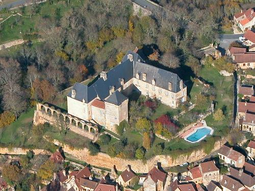

Romania is a great country to visit and has such a lot going for it so it’s a shame that this post is also about an evil character (we’ve previously posted about bed bugs and vampires). But we simply couldn’t let Nicolae Ceauşescu’s megalomaniacal pièce de résistance pass without comment.
The man was simply insane. Following an earthquake in 1977 he took the opportunity to knock down 40,000 homes to build one of the largest buildings in the world. He did this in a country that was suffering from chronic food shortages and where, even today, only half of households are connected to mains water.
The Palace of Parliament is ostentatiously huge. It has at least 3000 rooms – they haven’t bothered to count all of the antechambers and cleaner’s closets.

This is one of a matching pair of staircases in the entrance hall – Ceauşescu planned to greet guests by swanning down the left flight whilst his wife floated down the right hand stairs.

This was to be Ceauşescu’s personal theatre – there is no back stage area so no play has ever been performed here but it does have a four tonne crystal chandelier…

The ballroom. This picture doesn’t really do it justice, so for comparison below is a photo of the Château de Berbiguières, which we believe would more or less fit whole inside this room.


A simply enormous sitting room. Very impractical – one’s tea will have gone cold before the butler has finished carrying it to one’s chair.

View from a very dirty window. The palace is now surrounded by waste land.

All in all we were left wondering why exactly the Romanians, who executed Ceauşescu during the 1989 revolution, proceeded to spend the next six years completing the hated dictator’s pet project in such a grand style.